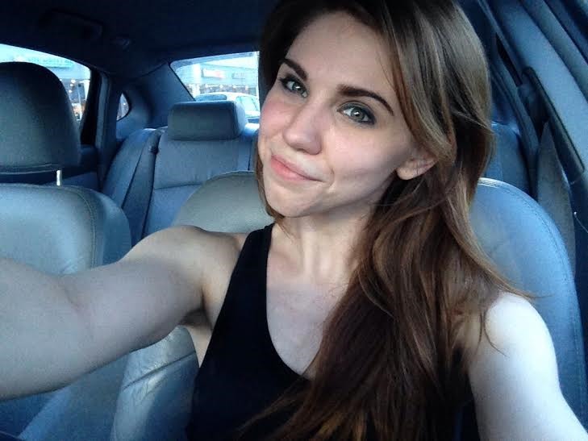

Happy April 7th, friends! Today I woke up in my twin-size bed, went about my day as per usual, and have come home to write this for you from the backroom of my childhood home. This time next year, however, I will have woken up in my twin-size bed, put on a lovely dress, taken pictures with an epic bridal party, and have walked down a long aisle with my handsome father where he will have given me away to my future husband. Today starts the official countdown to my wedding. We are one year away from the rest of our lives together.
So, what does this mean? Well, besides the crazy amount of planning that continues to ensue (we've already picked a venue and booked a photographer, though!), there will be a personal journey on my way to wifehood. Over the next year I will be dedicating myself to figuring out what it means to be a wife, what it means to be a better partner, a better person, and I will be putting a lot of effort into bettering my body - how it looks, but also how I feel about how it looks.
Enter: Fit and Engaged! This part of my blog will be dedicated to all things fitness, food, and mental health. Yesterday kick-started phase II of Crush 60, and the last two weeks I have incorporated a running session into my weeks. I'll be crafting my own fitness schedule, and paying close attention to what I am fueling my body with. At this point in the process, I do not plan to dive into a restrictive diet, but, as always; my health will be a priority.
Cheers to an improving body and soul!